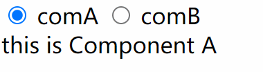
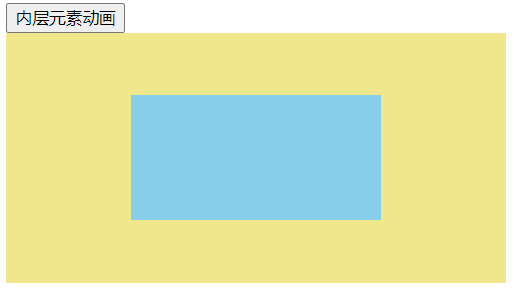
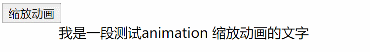
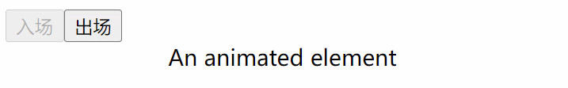
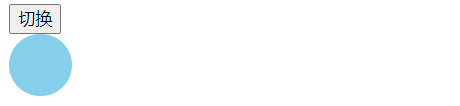
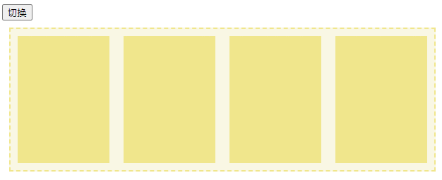
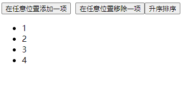

一、Vue 描述 UI 的 2 种方式
Vue 提供了以下两种方式来声明式描述 UI
- 模板语法来描述 UI
- 虚拟 DOM 来描述 UI
- 模板语法
- 以下代码使用模板语法来描述 UI
<!-- 模板语法描述UI -->
<button @click="count++">{{ count }}</button>
- 虚拟 DOM
- 以下代码使用虚拟 DOM 来描述 UI
/*
h() 函数是Vue提供用来创建虚拟DOM ,函数的
第一个参数：元素的HTML标签名
第二个参数：标签元素的属性、事件等
第三个参数：标签元素的子元素内容
*/
h("button", { onClick: () => count.value++ }, count.value);
注：
- 以上两段代码采用了不同的方式描述 UI，但最终渲染出来的结果是一模一样，都是告诉 Vue：
- 需要生成button元素，button元素的innerText值为count变量的值
- 为button元素绑定了click事件，点击按扭后，count变量的值 +1
二、虚拟 DOM
虚拟 DOM 定义
虚拟 DOM（Virtual DOM，简称 VDOM）是一种编程概念，意为将目标所需的 UI 通过数据结构“虚拟”地表示出来，保存在内存中，然后将真实的 DOM 与之保持同步。
- ”虚拟 DOM“ 简单理解就是用一个纯 JavaScript 的对象来描述真实的 DOM 结构
- ”虚拟 DOM“ 这个概念是由 React 率先开拓，随后被许多不同的框架采用，当然也包括 Vue。
- 以下为真实 DOM
<div id="box" class="active"></div>
- 转换成虚拟 DOM
const vnode = {
// 标签名 <div>
tag: "div",
// 标签上的属性
props: {
id: "box",
class: "active",
},
children: null, // 可以是 null 空数组、"" 或 不存在 都可以
// .....
};
注：上面代码用一个 JS 对象表达 DOM 结构
tag：属性用来描述标签名称，所以tag:’div’ 描述的就是一个标签props：属性值是一个对象，用来描述标签的属性、事件等内容。所以props:{id:'box',class:'active'}表示标签的属性，如：children：属性用来描述标签的子节点，没有子节点，所以值为null，当然也可是空数组，空字符串都可以。- 注意： JS 对象表示 vnode 的写法并不是固定的，对象中属性名可以自定义，也可以增加其它属性来表示元素的其它信息，没有规定说一定要如何写才是对，只要能用一个对象来表达出 DOM 的信息，就是合理的。
- 与其说虚拟 DOM 是一种具体的技术，不如说是一种模式，所以并没有一个标准的实现。
手动创建虚拟 DOM
将以下 DOM 结构转换为虚拟 DOM（vnode）
<div id="box" class="active"> <a href="xxx.html" target="_blank"> <img src="xxx.png" alt="图片" /> </a> <p>图片描述</p> </div>- 以上 DOM 结构转换为 vnode 如下
const vnode = { // 标签名 <div> tag: "div", // 标签上的属性 props: { id: "box", class: "active", }, // 标签的子节点，数组中每一个对象用来描述一个子节点 children: [ // 第一个子节点， { tag: "a", props: { href: "xxx.html", target: "_blank", }, children: [ { tag: "img", props: { src: "xxx.png", alt: "图片", }, }, ], }, // 第二个子节点 { tag: "p", children: "图片描述", }, ], };- 上面代码用一个 JS 对象表达 DOM 结构
tag：属性用来描述标签名称，所以tag:'div'描述的就是一个标签props：属性值是一个对象，用来描述标签的属性、事件等内容。所以props:{id:'box',class:'active'}表示标签的属性，如：<div id='box' class='active'></div>children：属性用来描述标签的子节点- 值可以是一个数组，数组中的每一个对象表示一个子节点。
- 也可以是一个字符串，表示只有一个文本类的子节点。
自动创建虚拟 DOM
如果真实 DOM 的结构非常复杂，我们还采用手动形式来书写虚拟 DOM 这肯定是不可行的。所以我们可以创建一个方法，用来将真实 DOM 转换成虚拟 DOM
实现原理- 创建一个函数，根据真实 DOM 节点返回 vnode
- 处理节点标签名
- 处理节点属性
- 处理节点的子节点
实现步骤
- 创建一个函数
createNode，该函数的第一个参数为真实 DOM 元素，然后返回该 DOM 元素的vnode
function createNode(el) { const vnode = {}; // .... return vnode; } // 返回#box的vnode const vnode = createNode(document.getElementById("box"));- 判断 el 是否是元素节点，如果是元素节点，则获取该元素的标签名
// 1、判断el是否为元素节点，如果是，获取该元素的标签名 if (el.nodeType === 1) { vnode.tag = el.tagName.toLowerCase(); }- 用
attribute获取元素节点的所有属性，然后将属性名与属性值作为props的属性和属性值
// 2、获取元素节点的所有属性，然后将属性名与属性值作为props的属性和属性值 const attrs = el.attributes; // 如果有属性 if (attrs.length) { const props = {}; vnode.props = props; [...attrs].forEach((attr) => { // 取出对应属性的属性名与属性值 let { name, value } = attr; props[name] = value; }); }- 用
childNodes获取该元素节点的子节点，如果存在，创建vnode.children=[],用来保存子节点。 - 在添加前，要判断子节点的类型。
- 如果子节点为文本节点，则直接将文本节点的
nodeValue添加到数组中 - 如果子节点为元素节点，则利用递归，获取子节点的 vnode，然后将 vnode 添加到数组中。
- 如果子节点为文本节点，则直接将文本节点的
- 注意：不能使用
children来获取子节点，因为它拿不到文本节点
// 3、获取子节点 const children = el.childNodes; // 如果存在子节点 if (children.length) { vnode.children = []; [...children].forEach((child) => { // 如果为文本节点 if (child.nodeType === 3) { // 如果不考虑空的文本节点 if (child.nodeValue.trim()) { //将不为空的文本节点push进vnode.children vnode.children.push(child.nodeValue.trim()); } // 如果为元素节点，就进行递归 } else if (child.nodeType === 1) { vnode.children.push(createNode(child)); } }); }- 最终完整版代码如下：
export default function createNode(el) { const vnode = {}; // 1、判断el是否为元素节点，如果是，获取该元素的标签名 if (el.nodeType === 1) { vnode.tag = el.tagName.toLowerCase(); // 2、获取元素的所有属性，然后遍历，将属性与属性对应值添加到props对象上 const attrs = el.attributes; // 如果有属性 if (attrs.length) { const props = {}; vnode.props = props; [...attrs].forEach((attr) => { let { name, value } = attr; props[name] = value; }); } // 3、获取子节点 const children = el.childNodes; // 如果存在子节点 if (children.length) { vnode.children = []; [...children].forEach((child) => { // 如果为文本节点 if (child.nodeType === 3) { // 如果不考虑空的文本节点，可以加个判断 if (child.nodeValue.trim()) { vnode.children.push(child.nodeValue.trim()); } // 如果为元素节点 } else if (child.nodeType === 1) { vnode.children.push(createNode(child)); } }); } } // .... return vnode; }回顾知识点
节点类型 nodeName nodeType nodeVulue 文档节点 #document 9 null 元素节点 标签名 1 null 属性节点 属性名 2 属性值 文本节点 #text 3 文本内容 拿到子节点的方式有两种
childNodes考虑所有节点children只考虑元素节点
三、Vue 渲染函数
前面我们提到 Vue 提供了 模板语法 与 虚拟 DOM 两种方式来声明式的描述 UI，那 Vue 是如何将模板与虚拟 DOM 转换为真实的 DOM 节点呢 ？这就需要用到 Vue 提供的以下两个函数：
h()函数：创建虚拟 DOMrender()渲染函数：返回虚拟 DOM
代码示例
- 以下 Vue 代码利用
h()函数来创建虚拟 DOM，然后利用render渲染函数返回虚拟 DOM。最终 Vue 会利用渲染器将虚拟 DOM 转换为真实 DOM 显示在页面中。
<script> import { h, ref } from "vue"; export default { setup() { let count = ref(10); /* h() 函数用来创建虚拟DOM ,函数的 第一个参数：元素的HTML标签名 第二个参数：标签元素的属性、事件等 第三个参数：标签元素的子元素内容 setup函数返回值为 render渲染函数 render函数返回用虚拟DOM树，最终Vue渲染器会将虚拟DOM渲染成真实DOM挂载到页面中。 */ return () => h("button", { onClick: () => count.value++ }, count.value); }, }; </script>h() 函数的语法
Vue提供的h()函数是用来创建vnodesh()是hyperscript的简称 —— 意思是 “能生成 HTML（超文本标记语言）的 JavaScript”
语法
function h( type: string | Component, props?: object | null, children?: Children | Slot | Slots ): VNode // children值的三种类型 type Children = string | number | boolean | VNode | null | Children[] type Slot = () => Children // 组件默认插槽内容 type Slots = { [name: string]: Slot } // 组件插槽内容参数
type：如果值为字符串，表示生成 DOM 元素的标签名。如果是一个 Vue 组件，表示将组件转换为 vnodeprops：可选参数，用于定义生成后标签元素或组件的属性、事件，值可以是一个对象也可以 nullchildren：可选参数，用于生成标签元素的子节点或组件的插槽内容
h 函数的基本用法
实际上h()函数的使用非常灵活。h函数可以
- 创建原生 HTML 元素的 vnode
- 也可以创建组件的 vnode
- 创建 HTML 元素的 vnode
以下代码为测试示例，你可以更改以下代码的h()，来查看最终生成的 DOM，掌握h函数的用法
<script> import { h } from "vue"; export default { setup() { return () => h("div"); }, }; </script>- h 函数被传入三个参数，第一个参数为标签名，第二个为标签属性，第三个为子节点
h("div", { id: "box" }, "Hello Vue!!"); // 以上代码，最终生成如下结构的vnode const vndoe = { type: "div", props: { id: "box" }, children: "Hello Vue!!", //...... }; // 渲染后DOM : <div id='box'> Hello Vue!! </div>- 第一个参数必填，表示标签名，其它两个参数为可选项
h("div"); // 渲染后DOM : <div></div> h("div", { id: "foo" }); // 渲染后DOM :<div id='foo'></div>- 没有 prop 时可以省略不写，第二个参数表示子节点
h("div", "hello"); // 渲染后DOM :<div>hello</div> h("div", [h("span", "hello")]); // 渲染后DOM : <div><span>hello</span></div>- 第三个参数children，可以是是以下任意类型
/* 字符串、数字、布尔值、虚拟DOM、null 、数组（成员为前面几种类型组成） */ type Children = string | number | boolean | VNode | null | Children[];h("div", { id: "foo" }, "hello"); // 渲染后DOM :<div id="foo">hello</div> h("div", true); // 渲染后DOM:<div>true</div> h("div", h("span", { class: "sp" })); // 渲染后DOM <div><span class="sp"></span></div> h("div", ["hello", h("span", "hello")]); // 渲染后DOM : <div>hello<span>hello</span></div>- 创建组件的 vnode
当给组件创建 vnode 时，传入给h()函数的
- 第一个参数应当是组件的定义
- 第二个参数是传递给组件的 prop 或 事件监听
- 第三个参数是传递给组件的插槽内容，如果组件只有默认槽，可以使用单个插槽函数进行传递。否则，必须以插槽函数的对象形式来传递。
type Slot = () => Children; // 只有一个默认插槽时，通过插槽函数传递插槽内容 type Slots = { [name: string]: Slot }; // 多个插槽时，要通过插槽函数对象形式传递插槽内容代码示例
App.vue
<script> import { h, ref } from 'vue'; import A from "./components/A.vue" export default { setup() { const title = ref("新闻标题"); const info = ref("新闻内容"); function update() { title.value = "标题XXX"; info.value = "内容XXX" // 渲染函数 return () => h( // 组件定义 A, // 组件属性与事件 { title: title.value, // prop属性 info: info.value, // prop属性 onUpdate: update // 组件监听事件 }, // 只传递默认插槽内容 // () => h('div', { class: "header" }, "最新动态"), // 传递多个插槽内容 { default: () => h('div', { class: "header" }, "最新动态"), footer: () => h('div', { class: 'footer' }, "底部") } ) } } } </script> <style scoped> .header, .footer { margin: 20px 0; background-color: skyblue; } </style>- A.vue
<script setup> // props defineProps(["title", "info"]); // emit defineEmits(["update"]); </script> <template> <div class="com-a"> <!-- 默认插槽 --> <slot></slot> <div class="main"> <h3>{{ title }}</h3> <p>{{ info }}</p> <button @click="$emit('update')">更新</button> </div> <!-- 具名插槽 --> <slot name="footer"></slot> </div> </template> <style scoped> .main { background-color: #ddd; } </style>渲染函数的基本用法
render()用于编程式地创建组件虚拟 DOM 树的函数，返回值为VNodeChild类型。- 在以下三种情况会用到渲染函数
- 选项式 API 中的
render选项 setup()函数直接返回render渲染函数<script setup>中使用render渲染函数
- 选项式 API
- 在选项式 API 中，我们可以使用 render 选项来声明渲染函数
- render()函数中的 this 为当前组件实例，所以在render()函数中可以访问组件的属性和方法等
<!-- App.vue --> <script> import { h } from "vue"; export default { data() { return { message: "Hello Vue!!", }; }, render() { // 返回值为vnode return h("div", { id: "box" }, this.message); }, }; </script>以上 App 组件最终渲染后的真实 DOM 如下：
<div id="box">Hello Vue!!</div>- setup() 函数中
- 组合式 API 中，
setup()钩子可以直接返回渲染函数。 - 在
setup()内部声明的渲染函数天生能够访问在同一范围内声明的 props 和许多响应式状态。
<script> import { h, ref } from "vue"; export default { props: ["text"], // props.text的值是 Vue!! data() { return { message: "Hello", // setup中访问不到 }; }, setup(props) { const msg = ref("Hello"); return () => { return h("div", { id: "box" }, msg.value + props.text); }; }, }; </script>- 以上 App 组件最终渲染后的真实 DOM 如下：
<div id="box">Hello Vue!!</div>- 在
<script setup>中使用在 setup 中，一个带有
render选项的 JS 对象就会被当成组件渲染，可以直接在模板中使用。
<script setup> import { h, ref } from "vue"; const info = ref("ComA"); const ComA = { render() { return h("div", info.value); }, }; </> <template> <ComA></ComA> </template>根渲染函数
根渲染函数是用于将一个 vnode 转换为真实 DOM 挂载到指定的 DOM 容器中。
- 语法：
function render(vnode, container, isSVG?: boolean) {}- 代码示例
<script setup> import { h, render, ref, onMounted } from "vue"; // 创建vnode const vnode = h("div", { id: "box" }, "Hello Vue!!"); // 获取.container元素 const container = ref(null); onMounted(() => { // 将vnode转换为真实DOM挂载到页面 // 第一个参数为vnode，第二个参数为挂载容器 render(vnode, container.value); // render(vnode, document.body) }); </script> <template> <div class="container" ref="container"></div> </template>渲染函数 与 template 模板
render函数是字符串模板的一种替代，所以不能一个组件中同时拥有render和template。- 因为单文件组件中的
template模板，会在构建时被编译为render函数，添加到组件实例上。
代码示例
A.vue文件
<script setup> import { ref } from "vue"; const msg = ref("A组件"); </script> <template> <div>A组件</div> </template>App.vue
<script setup> import A from "./components/A.vue"; console.log(A); </script> <template></template>模板 VS 渲染函数
Vue 提供了以下两种方式来声明式描述 UI
- 使用模板语法来描述 UI
- 使用虚拟 DOM 来描述 UI
在绝大多数情况下，Vue 推荐使用模板语法来创建应用，主要原因有：
- 模板更贴近实际的 HTML。这使得我们能够更方便地重用一些已有的 HTML 代码片段，能够带来更好的可访问性体验、能更方便地使用 CSS 应用样式，并且更容易使设计师理解和修改。
- 由于其确定的语法，更容易对模板做静态分析。这使得 Vue 的模板编译器能够应用许多编译时优化来提升虚拟 DOM 的性能表现 。具体内容参考 Vue 官网：带编译时信息的虚拟 DOM(opens new window)
在实践中，模板对大多数的应用场景都是够用且高效的。渲染函数一般只会在需要处理高度动态渲染逻辑的可重用组件中使用。
- 比如接下来要讲到的《动态生成带锚点标题》的案例，使用渲染函数要比使用模板语法来的更简洁高效易读。
实战应用：动态生成带锚点标题
我们希望创建如下这样一个组件，这个组件可以根据传入的
level属性值，动态生成带有链接的的h标签。<AnchoredHeading :level="3" href="http://www.icodingedu.com" >艾编程</AnchoredHeading > <!-- 以上代码最终编译后的真实DOM如下 --> <h3><a href="http://www.icodingedu.com">艾编程</a></h3>我们采用模板语法和虚拟 DOM 两种方式来描述 UI，通过对比来看那种方式更简洁
- 模板语法来描述 UI
<script setup> defineProps(["level", "href"]); </script> <template> <h1 v-if="level === 1"> <a :href="href"> <slot></slot> </a> </h1> <h2 v-else-if="level === 2"> <a :href="href"> <slot></slot> </a> </h2> <h3 v-else-if="level === 3"> <a :href="href"> <slot></slot> </a> </h3> <h4 v-else-if="level === 4"> <a :href="href"> <slot></slot> </a> </h4> <h5 v-else-if="level === 5"> <a :href="href"> <slot></slot> </a> </h5> <h6 v-else-if="level === 6"> <a :href="href"> <slot></slot> </a> </h6> </template>- 虚拟 DOM 描述 UI
<script> import { h } from "vue"; export default { props: ["level", "href"], setup(props, { slots }) { return () => h("h" + props.level, h("a", { href: props.href }, slots.default())); }, }; </script>- 通过对比，明显采用虚拟 DOM 描述 UI 的方式在这里更合适，代码相对要简洁很多
四、Vue 渲染机制
通过前面的学习，我知道 Vue 提供了模板语法与虚拟 DOM两种方式声明式描述 UI。
- 如果 Vue 提供虚拟 DOM 来描述 UI，则需要用到 h 函数来创建虚拟 DOM，render 函数来返回虚拟 DOM。最终 vue 渲染器会将 vnode 转换为真实 DOM。但渲染器是如何将 vnode 转换为真实 DOM 的呢 ？
- 如果 Vue 采用模板语法来描述 UI，那模板最终会被编译成什么，又如何转换成真实 DOM 的呢？
要回答面提到的两个问题，就需要先掌握以下几个知识点：
- 编译器
- 虚拟 DOM
- 渲染器
- 渲染器渲染组件
当我们了解了以上知识点后，我们就知道 Vue 的整个渲染流程和渲染机制了。
编译器
Vue 中的编译器主要是将 Vue 的模板编译成渲染函数，该渲染函数会添加到组件实例上。这一步通常是通过构建步骤提前完成的，也可以使用运行时编译器即时完成。即：
- 如果我们采用虚拟 DOM来描述 UI，并不需要用到编译器，因为我们是直接通过
h()函数来创建 vnode，然后在render渲染函数中返回 vnode。 - 只有采用模板语法来描述 UI 时，才需要用到编译器。
定义了一个 Vue 组件：
<!--A组件--> <script setup> function handler() {} </script> <template> <div @click="handler">点我</div> </template>- 在构建时，编译器会将上模板转换为一个与之功能相同的渲染函数，添加到组件实例上。
- 以上单文件组件最终被转换成如下代码：
function handler() {} const A = { __name: "A", // 组件名 render() { // h函数，用来生成vnode， return h("div", { onClick: handler }, "点我"); }, // ......省略更多属性 };渲染器
通过前面的学习我知道，如果 Vue 项目采用的是模板语法来描述 UI，则在构建项目时首先会利用编译器将模板编译成render渲染函数，渲染函数的返回值为虚拟 DOM
那 Vue 是如何将一个虚拟 DOM 转换为一个真实的 DOM 并渲染到浏览器页面中呢 ？这就需要借助渲染器来实现。- 渲染器的作用就是把虚拟 DOM 渲染为真实 DOM
代码示例
- 将以下 vnode 渲染成一个真实的 DOM
// 虚拟DOM中需要用到的事件处理函数 function handler() { alert("我被点击了"); } // vnode为虚拟DOM const vnode = { // html元素标签名 tag: "div", // 元素身上的属性 props: { id: "box", }, // 元素子节点 children: [ { tag: "button", props: { onClick: handler, // 绑定一个click事件，事件处理函数为handler }, children: "点我", }, ], };编写一个渲染器，将上面虚拟 DOM 转换为真实 DOM
- 实现思路：
- 创建 html 元素：把
vnode.tag作为标签名来创建 DOM 元素 - 为元素添加属性和事件：遍历
vnode.props对象，如果 key 以on字符开头，说明它是一个事件，事件名为on之后的字符，则从on之后截图字符并利用toLowerCase函数将事件名转换为小写，最终得到合法的事件名称。如：onClick变成click，最后调用addEventListener方法为元素添加事件监听。 - 创建子节点：首先判断
children是否有内容，如果没有则不做任何处理，如果是一个字符串，则使用createTextNode方法创建一个文本节点，并将其加入到新创建的元素内。如果是一个数组，则遍历数组，然后递归renderer函数继续渲染子节点。 - 挂载：将
vnode.tag作为标签名创建的元素挂载到真实的 DOM 容器container中
完整版代码
/** * 创建渲染器 renderer * vnode为需要渲染的虚拟DOM * container为一个真实DOM，渲染后的DOM需要挂载的容器 */ function renderer(vnode, container) { // 获取tag属性，创建DOM元素 const el = document.createElement(vnode.tag); // 遍历props，将属性与事件添加到元素身上 for (const key in vnode.props) { // 如果key为on开头，表示添加的事件 if (/^on/.test(key)) { // 将事件名，转换为小写，并去掉on const eventName = key.substring(2).toLocaleLowerCase(); // 添加事件监听 el.addEventListener(eventName, vnode.props[key]); } else { el.setAttribute(key, vnode.props[key]); } } // 判断是否有子节点,并判断是一个子节点还是多个， // 如果是一个，则是一个字符串，如果是多个，则是一个数组 if (vnode.children && typeof vnode.children === "string") { // 创建文本类子节点 el.appendChild(document.createTextNode(vnode.children)); } else if (Array.isArray(vnode.children)) { // 如果有多个子节点，则利用递归来处理 vnode.children.forEach((child) => { renderer(child, el); }); } // 将元素添加到挂载容器中 container.appendChild(el); }- 我们上面只学习了渲染器如何在初始化时创建 DOM 节点，但渲染器的核心是 DOM 的更新，DOM 的更新涉及到
diff算法与响应式，非常复杂，目前暂时不讲解。
渲染器渲染组件
通过前面的学习我们知道
- 组件最终编译成一个带有
render函数的对象。render函数返回值是一组vnode，这里的vnode就是template模板中的内容被编译器编译成了虚拟DOM
- 以下代码为编译后的组件实例
// A组件实例 const A = { render() { // h函数，用来生成vnode， return h("div", { onClick: handler }, "点我"); }, // ......省略更多属性 };虚拟 DOM 是用一个纯 JavaScript 的对象来描述真实的 DOM 结构。其实虚拟 DOM 除了能描述真实 DOM 之外，还能够描述组件。只需要将 vnode 对象的 tag 属性定义为一个组件的定义就 ok。
以下为组件 A 的虚拟 DOM
const vnode={ tag：A // A为组件实例 }- 渲染器的作用就是把虚拟 DOM 渲染成一个真实 DOM。那渲染器在渲染时，他如何判断是要渲染一个 HTML 元素，还是渲染一个组件呢？
- 渲染器在渲染时会判断传入的第一个参数 vnode 的
tag属性值是一个字符串还是一个对象- 如果是一个字符串则会渲染成 HTML 元素
- 如果是一个对象，则调用该对象的
render方法得到vnode，然后递归调用用renderer渲染器来渲染 vnode。
为了使渲染器能渲染组件，我们需要对renderer函数做修改，具体如下：
function renderer(vnode, container) { // 如果tag的值为字符串，则vnode描述的是标签元素 if (typeof vnode.tag === "string") { // mountElement方法，就是原来的renderer方法 mountElement(vnode, container); // 如果tag的值为对象，则vnode描述的是组件 } else if (typeof vnode.tag === "object") { mountComponent(vnode, container); } }mountElement函数用来渲染标签元素，与前面提到的renderer函数内容一致。
/** * 创建渲染器 * vnode为需要渲染的虚拟DOM * container为一个真实DOM，渲染后的DOM需要挂载的容器 */ function mountElement(vnode, container) { // 获取tag属性，创建DOM元素 const el = document.createElement(vnode.tag); // 遍历props，将属性与事件添加到元素身上 for (const key in vnode.props) { // 如果key为on开头，表示添加的事件 if (/^on/.test(key)) { // 将事件名，转换为小写，并去掉on const eventName = key.substring(2).toLocaleLowerCase(); // 添加事件监听 window.addEventListener(eventName, vnode.props[key]); } else { el.setAttribute(key, vnode.props[key]); } } // 判断是否有子节点,并判断是一个子节点还是多个， // 如果是一个，则是一个字符串，如果是多个，则是一个数组 if (vnode.children && typeof vnode.children === "string") { // 创建文本类子节点 el.appendChild(document.createTextNode(vnode.children)); } else if (Array.isArray(vnode.children)) { // 如果有多个子节点，则利用递归来处理 vnode.children.forEach((child) => { renderer(child, el); }); } // 将元素添加到挂载容器中 container.appendChild(el); }mountComponent函数，用来渲染组件。内容如下：
function mountComponent(vnode, container) { // vnode.tag是组件对象，调用它的render函数得到组件要渲染的内容(vnode) const subtree = vnode.tag.render(); mountElement(subtree, container); }测试代码
// A组件实例 const A = { render() { return { tag: "div", props: { id: "com", }, children: [ { tag: "p", children: "组件内容", }, ], }; }, }; // DOM元素的虚拟DOM const vnode1 = { tag: "div", props: { class: "box1", }, children: "div元素", }; // 组件A的虚拟DOM const vnode2 = { tag: A, }; // 渲染 html元素，挂载到#app容器中 renderer(vnode1, document.getElementById("app")); // 渲染组件，最终将生成的html元素挂载到#app2容器中 renderer(vnode2, document.getElementById("app2"));- 最终渲染后代码如下：
<div id="app"> <div class="box1">div元素</div> </div> <div id="app2"> <div id="com"> <p>组件内容</p> </div> </div>Vue 渲染流程
通过前面的学习，我们知道了 Vue 的渲染流程大致如下图：

编译
- 在项目构建阶段，会通过编译器将 Vue 模板编译为渲染函数，渲染函数用来返回虚拟 DOM 树
挂载（渲染器）
- 在运行项目时，渲染器会调用组件身上的渲染函数，遍历返回的虚拟 DOM 树，并基于它创建实际的 DOM 节点。当然内部还会做相关的响应式处理等更多优化。
更新
- 当某个响应式数据发生是变化时，会创建一个更新后的虚拟 DOM 树，然后渲染器遍历这棵新树，将它与旧树进行比较，然后将必要的更新应用到真实 DOM 上去。
五、深入 h 函数
前面我们对h函数的用法做了一定的了解，接下来我们针对没有讲到的一些内容做相关补充
attribute和property都可以用于 prop，Vue 会自动选择正确的方式来分配它
h("div", { class: "bar", innerHTML: "hello" }); // 渲染后DOM : <div class="bar">hello</div>- class 与 style 可以像在模板中一样，用数组或对象的形式书写
<script> import { h, ref } from "vue"; export default { setup() { const foo = ref("foo"); const bar = ref(true); return () => h("div", { class: [foo.value, { bar }], style: { color: "red" } }); }, }; </script> <!-- 渲染后DOM如下--> <div class="foo bar" style="color: red;"></div>- 给元素添加事件监听器以
onxxx的形式书写
h( "div", { onClick: () => { alert("点击了"); }, }, "点我" ); // 渲染后DOM : <div>点我</div> // 元素添加了点击事件，点击元素时，会弹出弹窗，显示"点击了"vnodes 必须唯一
组件树中的 vnodes 必须是唯一的，以下为错误示范:
<script> import { h } from "vue"; const p = h("p", "hi"); export default { setup() { return () => h("div", [p, p]); }, }; </script>- 如果 vnodes 是一样的，那后期操作 DOM 时，操作第一个 p 会影响到第二个 p
- 如果你真的非常想在页面上渲染多个重复的元素或者组件，你可以使用一个工厂函数来做这件事。
以下代码可以渲染出 10 个一样的 p 标签
<script> import { h } from "vue"; export default { setup() { return () => h( "div", Array.from({ length: 20 }).map(() => h("p", "h1")) ); }, }; </script>六、渲染函数案例
- v-on 事件
- 模板描述 UI
<script setup> import { ref } from "vue"; const count = ref(0); </script> <template> <button @click="count++">{{ count }}</button> </template>- 上面代码等价于下面代码
<script> import { h, ref } from "vue"; export default { setup() { const count = ref(0); return () => h("button", { onClick: () => count.value++ }, count.value); }, }; </script>- v-if 指令
- 模板描述 UI
<script setup> import { ref } from "vue"; const isShow = ref(true); </script> <template> <!--模板语法--> <div> <button @click="isShow = !isShow">切换</button> <div v-if="isShow">A内容</div> <div v-else>B内容</div> </div> </template>- 上面代码等价于下面代码
<script> import { h, ref } from "vue"; export default { setup() { const isShow = ref(true); // 渲染函数-------------- return () => h("div", [ h( "button", { onClick: () => (isShow.value = !isShow.value) }, "切换" ), isShow.value ? h("div", "A内容") : h("div", " B内容"), ]); }, }; </script>- v-for
- 模板描述 UI
<script setup> import { reactive } from "vue"; const list = reactive([1, 2, 3]); </script> <template> <ul> <li v-for="(item, index) in list" :key="index">{{ item }}</li> </ul> </template>- 上面代码等价于下面代码
<script> import { h, reactive } from "vue"; export default { setup() { const list = reactive([1, 2, 3]); return () => h( "ul", list.map((item, index) => h("li", { key: index }, item)) ); }, }; </script>- 事件修饰符
对于
.passive、.capture和.once事件修饰符，可以使用驼峰写法将他们拼接在事件名后面：
- 模板描述 UI
<script setup> import { ref } from "vue"; const count = ref(1); </script> <template> <!--只能点击一次，按下enter抬起键盘背景变红色--> <button @click.once="count++">{{ count }}</button> </template>- 上面代码等价于下面代码
<script> import { h, ref } from "vue"; export default { setup() { const count = ref(0); return () => h( "button", { onClickOnce: () => count.value++, }, count.value ); }, }; </script>对于事件和按键修饰符，可以使用
withModifiers函数：- 模板描述 UI
<script setup> import { h, ref } from "vue"; const count = ref(0); </script> <template> <div @click.self="count++"> <span>{{ count }}</span> </div> </template> <style scoped> div { width: 50px; height: 50px; padding: 50px; background-color: skyblue; } div span { display: block; width: 50px; height: 50px; background-color: khaki; } </style>- 上面代码等价于下面代码
<script> import { h, ref, withModifiers } from "vue"; export default { setup() { const count = ref(0); return () => h( "div", { onClick: withModifiers(() => count.value++, ["self"]), }, [h("span", count.value)] ); }, }; </script> <style scoped> div { width: 50px; height: 50px; padding: 50px; background-color: skyblue; } div span { display: block; width: 50px; height: 50px; background-color: khaki; } </style>- 组件
- 模板描述 UI
<script setup> import { shallowRef } from "vue"; import A from "./components/A.vue"; import B from "./components/B.vue"; const current = shallowRef(A); </script> <template> <button @click="current = B">切换到B</button> <component :is="current"></component> </template>- 上面代码等价于下面代码
<script> import { h, shallowRef } from "vue"; import A from "./components/A.vue"; import B from "./components/B.vue"; export default { setup() { const current = shallowRef(A); return () => h("div", [ h("button", { onClick: () => (current.value = B) }, "切换到B"), // 渲染组件的虚拟DOM h(current.value), ]); }, }; </script>- 内置组件
诸如
<KeepAlive>、<Transition>、<TransitionGroup>、<Teleport>和<Suspense>等内置组件在渲染函数中必须导入才能使用：
- 模板描述 UI
<script setup> import { h, shallowRef } from "vue"; import A from "./components/A.vue"; import B from "./components/B.vue"; const current = shallowRef(A); </script> <template> <button @click="current = B">切换到B</button> <button @click="current = A">切换到A</button> <KeepAlive> <component :is="current"></component> </KeepAlive> </template>- 上面代码等价于下面代码
<script> import { h, shallowRef, resolveComponent, KeepAlive } from "vue"; import A from "./components/A.vue"; import B from "./components/B.vue"; export default { setup() { const current = shallowRef(A); return () => h("div", [ h("button", { onClick: () => (current.value = B) }, "切换到B"), h("button", { onClick: () => (current.value = A) }, "切换到A"), h(KeepAlive, [h(current.value)]), ]); }, }; </script>- 渲染插槽
在渲染函数中，插槽可以通过
setup()的上下文来访问。- 每个
slots对象中的插槽都是一个返回vnodes数组的函数：
- 每个
- 模板描述 UI
<template> <div> <!-- 具名插槽 --> <slot name="header"></slot> <!-- 默认插槽 --> <slot :info="{ a: 1}"></slot> <!-- 具名插槽 --> <slot name="footer"></slot> </div> </template>- 上面代码等价于下面代码
<!--A组件--> <script> import { h } from "vue"; export default { // slots用来接受传递的插槽内容，返回该插槽的vnodes数组 setup(props, { slots }) { return () => h("div", [ // <slot name="header"></slot> slots.header(), // <slot info={a:1}></slot> slots.default({ info: { a: 1 }, }), // <slot name="footer"></slot> slots.footer(), ]); }, }; </script>- 在组件中使用上面的 A 组件
<script setup> import A from "./components/A.vue"; </script> <template> <a> <template #header> <div class="header">头部</div> </template> <template #default="{ info }"> <div class="main">主体参数：{{ info.a }}</div> </template> <template #footer> <div class="footer">底部</div> </template> </a> </template>- 传递插槽内容
- 在使用组件时，需要传递插槽内容，前面创建组件的 vnode 时讲过
- 组件 v-model
当我们在使用 A 组件时，在组件上绑定
v-model指令，如下：
<script setup> import { ref } from "vue"; import A from "./components/A.vue"; const isShow = ref(true); </script> <template> <a v-model="isShow"></a> </template>在 A 组件中要接受传过来的 props 和 emits，并在需要的时候触发事件。
模板描述 UI
<!--A组件--> <script> import { h } from "vue"; export default { props: ["modelValue"], emits: ["update:modelValue"], }; </script> <template> <button @click="$emit('update:modelValue', !modelValue)">切换</button> <div class="box" v-if="modelValue">内容</div> </template>- 上面代码等价于下面代码
<script> import { h } from "vue"; export default { props: ["modelValue"], emits: ["update:modelValue"], setup(props, { emit }) { return () => h("div", [ h( "button", { onClick: () => emit("update:modelValue", !props.modelValue), }, "切换" ), props.modelValue ? h("div", { class: "box" }, "内容") : "", ]); }, }; </script>- 自定义指令
可以使用
withDirectives将自定义指令应用于 vnode
- 模板描述 UI
<script setup> const vFocus = (el, binding) => { console.log(binding.value); // 指令值 console.log(binding.arg); // 指令参数 console.log(binding.modifiers); // 指令修饰符 el.focus(); }; </script> <template> <input type="text" v-focus:color.enter="'red'" value="123" /> </template>- 上面代码等价于下面代码
<script> import { h, withDirectives } from "vue"; export default { setup() { // 自定义指令 const focus = (el, binding) => { console.log(binding.value); // 指令值 console.log(binding.arg); // 指令参数 console.log(binding.modifiers); // 指令修饰符 el.focus(); }; return () => withDirectives( // html元素 h("input", { type: "text", value: "123" }), // 指令 [[focus, "red", "color", { enter: true }]] ); }, }; </script>- 模板引用
在组合式 API 中，模板引用通过将 ref() 本身作为一个属性传递给 vnode 来创建
- 模板描述 UI
<script setup> import { ref, onMounted } from "vue"; const box = ref(null); onMounted(() => { console.log(box.value.innerText); }); </script> <template> <div ref="box">box内容</div> </template>- 上面代码等价于下面代码
<script> import { ref, onMounted, h } from "vue"; export default { setup() { const box = ref(null); onMounted(() => { console.log(box.value.innerText); }); return () => h("div", { ref: box }, "box内容"); }, }; </script>七、函数式组件
函数式组件是一种定义自身没有任何状态的组件的方式
它们很像纯函数：接收
props，返回vnodes。函数式组件在渲染过程中不会创建组件实例（也就是说，没有 this），也不会触发常规的组件生命周期钩子。- 函数式组件的写法与
setup()函数类似，其返回值为vnode，
// 函数式组件 没有expose function MyComponent(props, { slots, emit, attrs }) { // ... return h("div"); // 返回vnode }- 大多数常规组件的配置选项在函数式组件中都不可用，除了
props和emits。我们可以给函数式组件添加对应的属性来声明它们：
MyComponent.props = ["value"]; MyComponent.emits = ["click"];- 函数式组件的基本用法
函数式组件和普通函数一样被注册和使用
- 在
<script setup>中定义函数式组件，则在模板中可以直接使用
<script setup> import { h } from "vue"; function MyComponent(props, { slots, emit, attrs }) { // ... return h("div", { class: "box" }, "函数式组件"); } </script> <template> <MyComponent></MyComponent> </template>- 在选项式 API 中，需要先注册，然后才能使用
<script> import { h } from "vue"; function MyComponent(props, { slots, emit, attrs }) { // ... return h("div", { class: "box" }, "函数式组件"); } export default { components: { MyComponent, }, }; </script> <template> <MyComponent></MyComponent> </template>- 函数式组件复杂应用
利用函数式组件实现如下
MyComponent组件
<script setup> defineProps(["title"]); // 声明接受的props defineEmits(["update"]); // 声明接受的事件 </script> <template> <div class="box"> <!--update方法更新title标题内容--> <button @click="$emit('update', 'xxxx函数式组件xxxx')">更新</button> <div>{{ title }}</div> <slot></slot> <slot name="main"></slot> </div> </template>- 在其它组件中使用MyComponent组件
<script setup> import { h, ref } from "vue"; // import MyComponent from "./components/MyComponent.js" import MyComponent from "./components/MyComponent.vue"; const title = ref("函数式组件"); function update(value) { title.value = value; } </script> <template> <MyComponent :title="title" info="内容" @update="update"> <template #default> <div>---默认插槽内容---</div> </template> <template #main> <div>---具名插槽main内容---</div> </template> </MyComponent> </template>- 上面代码等价下面的 函数式组件
import { h } from "vue"; // props属性 slots 插槽 emit 触发器 attrs 透传属性 export default function MyComponent(props, { slots, emit, attrs }) { // 返回虚拟DOM return h("div", { class: "box" }, [ h( "button", { onClick: () => emit("update", "xxxx函数式组件xxxx") }, "更新" ), h("div", props.title), slots.default(), // 默认插槽 slots.main(), // 具名插槽 ]); } // 声明接受的props MyComponent.props = ["title"]; // 声明接受的事件 MyComponent.emit = ["update"];Vue 为我们提供了两个内置组件
<Transition>和<TransitionGroup>，他们可以帮助我们制作基于状态变化的过渡和动画效果。<Transition>会在一个元素或组件进入和离开 DOM 时应用动画<TransitionGroup>会在一个v-for列表中的元素或组件被插入，移动，或移除时应用动画
除了以上两个组件，我们也可以通过其他技术手段来应用动画，比如切换
CSS class或用状态绑定样式来驱动动画八、
<Transition>内置组件组件的基本用法 <Transition>是一个内置组件，这意味着它在任意别的组件中都可以被使用，无需注册- 将需要使现过渡和动画的单个根元素或单个单根组件作为
<Transition>组件的默认插槽内容传入<Transition>中只能有一个根元素，多个根元素会报错，所以传入的组件也只能是单个单根组件
进入或离开的动画由以下条件之一触发
- 由 v-if 所触发的切换
- 由 v-show 所触发的切换
- 由特殊元素
<component>切换的动态组件 - 改变特殊的 key 属性
实现淡入淡出过渡动画效果
<script setup> import { ref } from "vue"; const isShow = ref(true); </script> <template> <button @click="isShow = !isShow">淡出与淡入</button> <!--Transition内置组件--> <Transition> <div class="box" v-show="isShow"></div> </Transition> </template> <style> .box { width: 100px; height: 100px; background-color: skyblue; } </style>- 以上代码还不能使现元素在被插入或移除时有过渡与动画效果，还必须提供配套的 CSS 样式，如下：
/* 元素插入动画样式 */ .v-enter-from { opacity: 0; } .v-enter-active { transition: opacity 2s ease; } .v-enter-to { opacity: 1; } /* 元素移除动画样式 */ .v-leave-from { opacity: 1; } .v-leave-active { transition: opacity 2s ease; } .v-leave-to { opacity: 0; }CSS 过渡 Class
在利用
<Transition>内置组件实现过渡与动画时，会自动为元素在不同的时刻添加和移除对应的CSS class- 如下图：

Enter 入场动画 （插入元素时动画）
v-enter-from：进入动画的起始状态。在元素插入之前添加，在元素插入完成后的下一帧移除。v-enter-active：进入动画的生效状态。应用于整个进入动画阶段。在元素被插入之前添加，在过渡或动画完成之后移除。这个 class 可以被用来定义进入动画的持续时间、延迟与速度曲线类型。v-enter-to：进入动画的结束状态。在元素插入完成后的下一帧被添加 (也就是v-enter-from被移除的同时)，在过渡或动画完成之后移除。
Leave 出场动画（移除元素时动画）
v-leave-from：离开动画的起始状态。在离开过渡效果被触发时立即添加，在一帧后被移除。v-leave-active：离开动画的生效状态。应用于整个离开动画阶段。在离开过渡效果被触发时立即添加，在过渡或动画完成之后移除。这个 class 可以被用来定义离开动画的持续时间、延迟与速度曲线类型。v-leave-to：离开动画的结束状态。在一个离开动画被触发后的下一帧被添加 (也就是v-leave-from被移除的同时)，在过渡或动画完成之后移除。
分析前面提到的淡出与淡入的效果的整个 Class 添加与移除的过程
- 点击按扭，方块淡出隐藏，Class 添加和移除过程如下：
<!-- 1、淡出动画生效前 添加 v-leave-from 和 v-leave-active --> <div class="box v-leave-from v-leave-active"></div> <!-- 2、添加 v-leave-to 的同时（稍后）移除 v-leave-from 触发淡出动画- --> <div class="box v-leave-active v-leave-to"></div> <!-- 3、淡出动画结束后，移出 v-leave-active 和 v-leave-to --> <div class="box"></div>- 点击按扭，方块淡出显示，Class 添加移除过程如下：
<!-- 1、在淡入动画生效前 class --> <div class="box v-enter-from v-enter-active"></div> <!-- 2、移除v-enter-from 添加v-enter-to 触发淡入动画--> <div class="box v-enter-active v-enter-to "></div> <!--3、 动画结束后，移除v-enter-active 和 v-enter-to--> <div class="box"></div>优化前面 “淡入与淡出” 动画的 CSS 样式
- 其实不难发现，上面（一般情况下）过渡动画的
v-enter-to与v-leave-from中 CSS 样式是一样的，因为入场动画的结束状态就是出场动画的开始状态v-enter-from与v-leave-to中 CSS 样式是一样的，因为出场动画的结束状态就是入场动画的开始状态v-enter-active与v-leave-active中 CSS 样式是一样的，大多情况下，出场与入场动画执行相反效果，其动画代码是一样的。
- 优化后的 CSS 样式
/* 动画起始与离开动画的结束状态 */ .v-enter-from, .v-leave-to { opacity: 0; } /* 动画生效状态 */ .v-enter-active, .v-leave-active { transition: opacity 2s ease; } /* 动画结束与离开动画的起始状态*/ /* 以下代码写可以省略，因为元素没有调置opacity属性时，默认值为1 .v-enter-to,.v-leave-from { opacity: 1; } */元素初次渲染时过渡 （appear 属性）
前面讲到的 “淡入与淡出” 动画，在页面初次渲染时并没有呈现一个淡入的动画效果，如果想在元素初次渲染时应用一个过渡效果，你可以为他添加
appear属性。<Transition appear> ... </Transition>元素间过渡
接下来，我们实现如下图所示的多个元素来回切换的过渡动画效果
<img src=”元素间过度—transiion组件.gif”- 几个元素当中不同时刻只能有一个元素显示，所以我们可以利用
v-if、v-else、v-else-if来确保每次<Transition>组件内只能有一个根元素或一个单根组件，如下：
<Transition> <div class="item" v-if="index === 1">1</div> <div class="item" v-else-if="index === 2">2</div> <div class="item" v-else-if="index === 3">3</div> </Transition> <!-- 以下写法是错的 --> <Transition> <div class="item" v-if="index === 1">1</div> <div class="item" v-if="index === 2">2</div> <div class="item" v-if="index === 3">3</div> </Transition>- 每个元素在切换时的入场与出场动画都是一样的，所以我们只需为他们指定一套入场与出场的 CSS 样式即可
/* 入场动画开始前状态 */ .v-enter-from { opacity: 0; transform: translateX(100px); } /* 入场与出场动画生效状态*/ .v-enter-active, .v-leave-active { transition: all 1s ease; } /* 出场动来结束后状态*/ .v-leave-to { transform: translateX(-100px); opacity: 0; } /* 以下代码可省略 入场动画结束入出场动画开始状态一样，只需要采用默认值即可*/ /* .v-enter-to, .v-leave-from { transform: translateX(0); opacity: 1; } */过渡模式 mode=”out-in”
我们观察上面代码实现的多个元素切换的过渡动画（如下图），可以看到入场和出场的元素都是同时开始动画的。
- 因此我们需要将它们设为
positions: absolute以避免二者同时存在时出现的布局问题
但在有些情况下，我可能希望在出场动画结束后，再开始执行入场动画。我们可以通过向
<Transition>传入一个mode属性来实现这个行为。mode="out-in"表示，先执行出场（离开）动画，出场动画结束后，再执行入场动画mode="in-out"表示，先执行入场（进入）动画，入场动画结束后，再执行出场动画 （基本不用）
<Transition mode="out-in"> ... </Transition>组件间过渡 我们前面提到过
<Transition>也可以作用于由<component>切换的动态组件<Transition mode="out-in"> <component :is="activeComponent"></component> </Transition>接下来，我们实现如下多组件间切换的过渡效果
- 完整代码
<!-- App根组件 --> <script setup> import { shallowRef } from "vue"; import ComA from "./components/ComA.vue"; import ComB from "./components/ComB.vue"; const activeComponent = shallowRef(ComA); // 浅层响应性能更高 </script> <template> <!--单选按扭--> <input type="radio" v-model="activeComponent" :value="ComA" /> comA <input type="radio" v-model="activeComponent" :value="ComB" /> comB <!--多组件间过渡--> <Transition mode="out-in"> <component :is="activeComponent" /> </Transition> </template> <style> .v-enter-from, .v-leave-to { opacity: 0; } .v-enter-active, .v-leave-active { transition: opacity 0.5s ease; } /* .v-enter-to, .v-leave-from { opacity: 1; } */ </style> <!-- ComA 组件 --> <template> <div class="com-a">this is Component A</div> </template> <!-- ComB 组件 --> <template> <div class="com-b">this is Component A</div> </template>为过渡效果命名
当一个页面同时有多个不同的过渡动画时，则需要为不同的过渡动画取不同的过渡效果名。
- 我们可以给
<Transition>组件传一个name属性来声明一个过渡效果名
<Transition name="fade"> ... </Transition>- 当
<Transition>有了name属性后，CSS 过渡 Class 的名字不再是以v-作为前缀，而是要以name属性的值作为前缀。
如果
name=fade则对应的过渡Class名为fade-enter-from、fade-enter-active、fade-enter-to、fade-leave-from、fade-leave-active、fade-leave-to- 针对前面实现的 “淡出与淡入” 动画，我们给
<Transition>组件添加name="fade"属性，完整版代码如下：
<script setup> import { ref } from "vue"; const isShow = ref(true); </script> <template> <button @click="isShow = !isShow">淡出与淡入</button> <Transition appear name="fade"> <div class="box" v-show="isShow"></div> </Transition> </template> <style> .box { width: 100px; height: 100px; background-color: skyblue; } /* 动画起始与离开动画的结束状态 */ .fade-enter-from, .fade-leave-to { opacity: 0; } /* 动画生效状态 */ .fade-enter-active, .fade-leave-active { transition: opacity 2s ease; } </style>深层级过渡与显式指定过渡时长
通过前面的学习，我们知道过渡
class仅能应用在<Transition>组件的根元素上，如果我们想使根元素的后代元素有过渡和动画效果- 简单效果
- 如下图所示效果：
- 我们可以通过 CSS 后代选择器，在后代元素上触发过渡效果。
代码示例
- 以下代码，我们期望通过 CSS 后代选择器，使动画效果最终触发在
.box元素上
<script setup> import { ref } from "vue"; const isShow = ref(true); </script> <template> <div><button @click="isShow = !isShow">内层元素动画</button></div> <!-- 自定义过渡Class名 --> <Transition name="fade"> <div class="container" v-if="isShow"> <div class="box"></div> </div> </Transition> </template> <style scoped> .container { width: 400px; height: 200px; background-color: khaki; display: inline-block; } .box { width: 200px; height: 100px; margin: 50px auto; background-color: skyblue; } /* 动画起始与离开动画的结束状态 */ .fade-enter-from .box, .fade-leave-to .box { opacity: 0; } /* 动画生效状态 */ .fade-enter-active .box, .fade-leave-active .box { transition: opacity 2s ease; } </style>- 但实际上，以上代码并不没有实现我们想要的效果，不管是
.container还是.box元素都没有动画效果。
没有过渡效果原因如下
<Transition>组件之所以能清楚的知道transition动画在何时结束，是因为其内部监听了根元素上的transitionend事件。- 通过
transitionend事件 Vue 就可以知道动画何时结束。 - 在嵌套的过渡动画中，根元素很多时候本身并没有任何的过渡动画，所以会立即显示或隐藏，以致于看不到内部元素的过渡效果。
如何才能看到过渡效果
- 要实现以上效果，我们可以向
<Transition>组件传入duration属性来显示指定根元素过渡的持续时间（以毫秒为单为）。然后就会按以下效果来完成动画。 - 在入场动画时，先显示根元素，然后再执行内部元素的动画
- 在出场动画时，需要先执行内部元素的动画，在动画结束后，再隐藏根元素
<!-- 入场与出场动画持续是一样，均为2s--> <Transition name="fade" duration="2000"></Transition> <!-- 入场动画持续时间2s ，出场动画持续时间 3s --> <Transition :duration="{ enter: 2000, leave: 3000 }">...</Transition>- 温馨提示：持续时间不应该小于内部元素动画从开始到结束所需要的时间
优化上面案例代码
- 给以上代码的
<Transition>组件添加duration="2000"后，就能看到前面gif图片显示的动画效果了
<Transition name="fade" duration="2250"></Transition>为了使看到的动画更自然，可以添加以下代码，让
.box元素的入场动画延迟.25s秒执行。.fade-enter-active .box { transition-delay: 0.25s; }- 以下是最终完整版代码：
<script setup> import { ref } from "vue"; const isShow = ref(true); </script> <template> <div><button @click="isShow = !isShow">内层元素动画</button></div> <!-- 自定义过渡Class名 --> <Transition name="fade" appear duration="2250"> <div class="container" v-if="isShow"> <div class="box"></div> </div> </Transition> </template> <style scoped> .container { width: 400px; height: 200px; background-color: khaki; display: inline-block; } .box { width: 200px; height: 100px; margin: 50px auto; background-color: skyblue; } /* 动画起始与离开动画的结束状态 */ .fade-enter-from .box, .fade-leave-to .box { opacity: 0; } /* 动画生效状态 */ .fade-enter-active .box, .fade-leave-active .box { transition: opacity 2s ease; } .fade-enter-active .box { transition-delay: 0.25s; } </style>- 复杂动画应用
我们在上面代码的基础上，做相关优化，最终实现如下动画效果
- 入场动画：黄色盒子执行淡入动画，淡入动画结束后，内部的蓝色盒子再执行淡入动画
- 出场动画：蓝色盒子先执行淡出动画，淡出动画结束后，黄色盒子再执行淡出动画。
实现原理
- 假设黄色盒子与蓝色盒子的动画执行时间都
1s，则我们可以将duration = 2000 - 入场动画：给黄色盒子和蓝色盒子添加入场动画样式，同时控制黄色盒子的动画在延迟
1s之后开始执行
/* 黄色盒子入场动画样式 */ .fade-enter-from { opacity: 0; } .fade-enter-active { transition: opacity 1s ease; } /* 蓝色盒子入场动画样式*/ /* 动画起始与离开动画的结束状态 */ .fade-enter-from .box { opacity: 0; } .fade-enter-active .box { transition: opacity 1s ease; transition-delay: 1s; /* 延迟 1s后开始动画 */ }- 出场动画：给黄色盒子和蓝色盒子添加了出场动画样式，同时控制黄色盒子的动画在延迟 1s 之后开始执行
/* 黄色盒子出场动画样式 */ .fade-leave-to { opacity: 0; } .fade-leave-active { transition: opacity 1s ease; transition-delay: 1s; /* 延迟 1s后开始动画 */ } /* 蓝色盒子出场动画样式 */ .fade-leave-to .box { opacity: 0; } .fade-leave-active .box { transition: opacity 1s ease; }- 完整版代码
<script setup> import { ref } from "vue"; const isShow = ref(true); </script> <template> <div><button @click="isShow = !isShow">内层元素动画</button></div> <!-- 自定义过渡Class名 --> <Transition name="fade" duration="2000" appear> <div class="container" v-if="isShow"> <div class="box"></div> </div> </Transition> </template> <style scoped> button { margin: 50px; } .container { width: 400px; height: 200px; background-color: khaki; display: inline-block; margin-left: 50px; } .box { width: 200px; height: 100px; margin: 50px auto; background-color: skyblue; } /* 动画起始与离开动画的结束状态 */ .fade-enter-from, .fade-leave-to, .fade-enter-from .box, .fade-leave-to .box { opacity: 0; } /* 黄色盒子入场动画 */ .fade-enter-active { transition: opacity 1s ease; } /* 黄色盒子出场动画 */ .fade-leave-active { transition: opacity 1s ease; transition-delay: 1s; } /* 动画生效状态 */ .fade-enter-active .box { transition: opacity 1s ease; transition-delay: 1s; } .fade-leave-active .box { transition: opacity 1s ease; } </style>CSS 的 animation 动画
在
<Transition>组件中，实现原生 CSS 的animation动画与原生 CSS 的transition动画的应用方式基本是相同的，只有一点不同，那就是*-enter-from不是在元素插入后立即移除，而是在一个animationend事件触发时被移除。- 对于大多数 CSS 的
animation动画，我们只需要在*-enter-active和*-leave-activeClass下声明它们
我们来看下面这样一个元素自动缩放的动画效果，如何来实现
我们先来分析下上面的效果
- 出场（离场）：元素从显示到隐藏，先是原大小，再是放大，最后缩小一直到看不见
- 入场：元素从隐藏到显示，先是从看不见一直放大，然后再缩小到原大小
- 所以元素从隐藏到显示的
animation动画定义如下，当从显示到隐藏时，只需要反着来执行该动画就好
- 所以元素从隐藏到显示的
/* 定义动画 从隐藏到放大再缩放到原大小 */ @keyframes scale { 0% { transform: scale(0); /* 看不见*/ } 50% { transform: scale(1.25); } 100% { transform: scale(1); } }- 完整版代码
<script setup> import { ref } from "vue"; const isShow = ref(true); </script> <template> <button @click="isShow = !isShow">缩放动画</button> <Transition name="scale" appear> <div class="text" v-if="isShow">我是一段测试animation 缩放动画的文字</div> </Transition> </template> <style scoped> .text { text-align: center; } /* 入场动画*/ .scale-enter-active { /* 动画名 动画时间 时间函数 延迟时间 执行次数 执行方向（reverse 为反向播放） 动画不播放时模式 */ /* animation: name duration timing-function delay iteration-count direction fill-mode; */ animation: scale 1s ease; } /* 出场动画 */ .scale-leave-active { /* 与入场动画相反的方式执行 */ animation: scale 1s ease reverse; } /* 定义动画 */ @keyframes scale { 0% { transform: scale(0); } 50% { transform: scale(1.25); } 100% { transform: scale(1); } } </style>自定义过渡 class
你也可以向
<Transition>传递以下的props来指定自定义的过渡class：enter-from-class enter-active-class enter-to-class leave-from-class leave-active-class leave-to-class- 你传入的这些 class 会覆盖相应阶段的默认 class 名。如下：
<Transition enter-active-class="bounce-in a" leave-active-class="bounce-out"> <div class="text" v-if="isShow">我是一段测试animation 缩放动画的文字</div> </Transition>- 在没有自定义过渡 class 时，入场动画生效状态添加的 class 是
v-enter-active，自定义了enter-active-class后，添加的class是bounce-in和a - 在没有自定义过渡 class 时，出场动画生效状态添加的 class 是
v-leave-active，自定义了leave-active-class后，添加的 class 是bounce-out - 用上面代码替换前面 “缩放动画” 对应的
<Transition>标签内容，则对应的 CSS 需要写成如下：
.bounce-in { animation: scale 1s ease; } .a { } .bounce-out { animation: scale 1s ease reverse; }- 完整版代码
<script setup> import { ref } from "vue"; const isShow = ref(true); </script> <template> <button @click="isShow = !isShow">缩放动画</button> <!-- 自定义过渡Class名 --> <Transition enter-active-class="bounce-in" leave-active-class="bounce-out"> <div class="text" v-if="isShow">我是一段测试animation 缩放动画的文字</div> </Transition> </template> <style scoped> .text { text-align: center; } /* 入场动画 */ .bounce-in { animation: scale 1s ease; } /* 出场动画 */ .bounce-out { animation: scale 1s ease reverse; } /* 定义动画 */ @keyframes scale { 0% { transform: scale(0); } 50% { transform: scale(1.25); } 100% { transform: scale(1); } } </style>animate.css 与
组件结合应用 当我们想要在 Vue 的动画机制下集成其他的第三方 CSS 动画库时，自定义过渡 class 就显得非常有用。
- 比如：常见的第三方 CSS 动画库：Animate.css
- 如何使用 Animate 动画库
- 第一步：打开 Animate 动画库官网
- Animate 官网地址：
https://animate.style/
- Animate 官网地址：
- 第二步：安装
animate.css包- 按官网首页的安装教程来安装
animate.css包，命令如下：
- 按官网首页的安装教程来安装
npm install animate.css --save- 第三步：导入
animate.css样式
import "animate.css";- 第四步：添加动画
- 在需要执行相关动画的元素上，添加对应的动画的
class名，如下：- 与Class结合
- 在需要执行相关动画的元素上，添加对应的动画的
<!-- animate__animated 是必需要加的基础类，animate__bounce为所要实现动画效果的动画类 --> <div class="animate__animated animate__bounce">An animated element</div>- 与
<Transition>结合
<Transition enter-active-class="animate__animated animate__backInLeft" leave-active-class="animate__animated animate__backOutRight" > //... </Transition>- 不同的动画 Class 名，大家可以在动画名右侧显示的小方块上点击下，就可以复制到对应的 Class 名
- 应用：入场出场动画
接下来，我们利用
Animate与<Transition>实现以下酷炫动画效果

- 完整版代码如下：
<script setup> import "animate.css"; import { ref } from "vue"; const isShow = ref(true); </script> <template> <button @click="isShow = true" :disabled="isShow">入场</button> <button @click="isShow = false" :disabled="!isShow">出场</button> <Transition appear name="custom-classes" enter-active-class="animate__animated animate__backInLeft" leave-active-class="animate__animated animate__backOutRight" > <div class="text" v-show="isShow">An animated element</div> </Transition> </template> <style> .text { text-align: center; } </style>- 注：以上代码中的
name属性相对于自定义过渡class而言，是不生效的，但对于没有定义的过渡class是生效的 - 千完不要忘记加
animate__animated
同时使用 transition 和 animation
不管是
transition动画还是animation动画，Vue 之所以能知道动画在何时结束，是因为内部监听了transitionend和animationend事件。如果一个元素只运用了
transition或animation中的一种动画，Vue 可以自动探测到正确的类型，然后监听对应的事件。如果一个元素同时运用了这两种动画，则 Vue 就没有办法知道应该在那个动画结束时将元素移除。这时就需要我们显示的传入
type属性来声明，告诉 Vue 需要关心哪种类型，传入的值是animation或transition以下代码展示在执行
animation动画的同时，执行了transition动画使文字变色。- 如果我们显式指定了
type="animation"，相当于告诉 vue，帮我们监听animationend事件，动画会在1s后结束。 - 如果我们显式指定了
type="transition"，相当于告诉 Vue，帮我们监听transitionend事件，动画会在20s后结束
<script setup> import { ref } from "vue"; const isShow = ref(true); </script> <template> <button @click="isShow = !isShow">缩放动画</button> <!-- 自定义过渡Class名 --> <Transition name="rotate" type="animation" enter-active-class="bounce-in rotate-in" leave-active-class="bounce-out rotate-out" > <div class="text" v-if="isShow">我是一段测试animation 缩放动画的文字</div> </Transition> </template> <style scoped> .text { text-align: center; } .rotate-enter-from, .rotate-leave-to { color: red; } .rotate-in, .rotate-out { transition: color 20s; } /* 入场动画 */ .bounce-in { animation: scale 1s ease; } /* 出场动画 */ .bounce-out { animation: scale 1s ease reverse; } /* 定义动画 */ @keyframes scale { 0% { transform: scale(0); } 50% { transform: scale(1.25); } 100% { transform: scale(1); } } </style>对比
使用CSS 过渡 Class
- 使用
*-enter-from等六种class - 在
.*-enter/leave-active中使用的是transition
使用animation动画
- 使用
@keyframes name定义动画 - 在
*-enter-active和*-leave-activeClass下声明animation动画 - 在
*-*-active样式中使用animation
使用自定义过渡时
- 需要在
<Transition>中指定自定义过渡的class - 注意：此时name属性相对于自定义过渡 class 而言，是不生效的，只对于没有定义的过渡 class 是生效的
animation+自定义过渡
- 在
style中，使用自定义样式替代*-enter-active和*-leave-activeClass中对动画的声明 - 如果使用
animation.css
- 引入库后，只需在
<Transition>的对应class中填上动画名 - 注意不能忘记基础的css样式
animate__animated style中不用再写*-enter-active和*-leave-activeClass
动画的 JavaScript 钩子
Vue 为
<Transition>组件添加了一些事件，这些事件会在过渡不同生命阶段自被动调用。- 我们可以通过监听事件的方式在过渡过程中挂上钩子函数：
<Transition @before-enter="onBeforeEnter" @enter="onEnter" @after-enter="onAfterEnter" @enter-cancelled="onEnterCancelled" @before-leave="onBeforeLeave" @leave="onLeave" @after-leave="onAfterLeave" @leave-cancelled="onLeaveCancelled" > <!-- ... --> </Transition>- 以下为钩子函数的不同执行时机
// 在元素被插入到 DOM 之前被调用 // 用这个来设置元素的 "enter-from" 状态 function onBeforeEnter(el) {} // 在元素被插入到 DOM 之后的下一帧被调用 // 用这个来开始进入动画 function onEnter(el, done) { // 调用回调函数 done 表示过渡结束 // 如果与 CSS 结合使用，则这个回调是可选参数 done(); } // 当进入过渡完成时调用。 function onAfterEnter(el) {} // 在 leave 钩子之前调用 // 大多数时候，你应该只会用到 leave 钩子 function onBeforeLeave(el) {} // 在离开过渡开始时调用 // 用这个来开始离开动画 function onLeave(el, done) { // 调用回调函数 done 表示过渡结束 // 如果与 CSS 结合使用，则这个回调是可选参数 done(); } // 在离开过渡完成、 // 且元素已从 DOM 中移除时调用 function onAfterLeave(el) {} // 仅在 v-show 过渡中可用 function onLeaveCancelled(el) {}- 注意：在调用回调函数
done时，需要设置定时器，在动画结束后调用done - 在使用仅由
JavaScript执行的动画时，最好是添加一个:css="false"属性。这显式地向 Vue 表明可以跳过对 CSS 过渡的自动探测。除了性能稍好一些之外，还可以防止 CSS 规则意外地干扰过渡效果
<Transition :css="false"> ... </Transition>钩子函数功能
各个钩子函数中具体实现的功能
- 如下表：
钩子函数 功能 @before-enter 用来设置入场动画的起始状态，即 enter-from状态，等同于.v-enter-from@enter 用来设置入场动画与动画的结束状态，即 enter-active与enter-to@after-enter 入场动画结束后，移除添加到元素身上的动画样式 （还要移除： v-leave-active）@enter-cancelled 入场动画中途被中断后，通常要移除 enter-to状态@before-leave 用来设置出场动画的起始状态，即 leave-from状态@leave 用来设置出场动画与动画的结束状态，即 leave-active与leave-to@after-leave 出场动画结束后，移除添加到元素身上的动画样式 (还要移除 v-enter-active)@leave-cancelled 出场动画中途被中断后，通常要移除 leave-to状态
- 如下表：
案例：弹性动画

以上动画中，入场动画和出场动画分别是用
transition和animation来实现的- 不过，入场动画的开始状态并不是出场动画的结束状态
- 但是，入场动画的结束状态是出场动画的开始状态
- 完整代码
<script setup> import { ref } from "vue"; const show = ref(true); const timer = ref(null); /* 入场动画状态 */ function onBeforeEnter(el) { el.classList.add("v-enter-from"); } /* 入场动画与动画结束状态 */ function onEnter(el, done) { setTimeout(() => { el.classList.add("v-enter-active", "v-enter-to"); el.classList.remove("v-enter-from"); }); setTimeout(() => { done(); }, 1200); } // 入场动画结束后，将添加的动画样式删除 function onAfterEnter(el) { el.classList.remove("v-enter-to", "v-enter-active"); } // 出场动画 function onLeave(el, done) { setTimeout(() => { el.classList.add("v-leave-active"); }); clearTimeout(timer.value); timer.value = setTimeout(() => { done(); }, 2000); } // 出场动画结束后，将添加的动画样式移除 function onAfterLeave(el) { el.classList.remove("v-leave-active"); } function onLeaveCancelled(el) { el.classList.remove("v-leave-active"); } </script> <template> <button @click="show = !show">切换</button> <Transition :css="false" @before-enter="onBeforeEnter" @enter="onEnter" @after-enter="onAfterEnter" @enter-cancelled="onAfterEnter" @leave="onLeave" @after-leave="onAfterLeave" @leave-cancelled="onLeaveCancelled" > <div class="ball" v-show="show"></div> </Transition> </template> <style> .ball { width: 50px; height: 50px; background-color: skyblue; border-radius: 50%; } .v-enter-from { transform: scale(0.25); opacity: 1; } .v-enter-active { transition: all 1s ease; transition-delay: 200; } .v-enter-to { transform: scale(1); } .v-leave-active { /* forwards 表示动画结束后将停止在最后结束的状态，以免产生回到原始位置的抖动效果 */ animation: move 2s ease forwards; } @keyframes move { 0% { transform: scale(1) translateX(0px); } 20% { transform: scale(1) translateX(-50px); } 100% { transform: translateX(300px) scale(0.25); opacity: 0; } } </style>封装动画组件
接下来我们把淡出与淡入动画 和 左右滑动动画封装在
<CustomTransiton>组件中，当我们传入以下不同props时，显示不同的动画- 注意：
在
style中使用变量时，要使用v-bind才能实现插槽的样式原本应该写在父组件中，但因为要封装组件，所以样式写在了子组件中，因此，子组件的
style不能加scope完整版代码如下：
<script setup> const props = defineProps(["duration", "animationName"]); </script> <template> <Transition :name="animationName"> <slot></slot> </Transition> </template> <style> /* fade 淡入与淡出动画 */ .fade-enter-from, .fade-leave-to { opacity: 0; } .fade-enter-active, .fade-leave-active { transition: opacity v-bind(duration) ease; } /* 左右滑动动画 */ .slide-enter-from, .slide-leave-to { transform: translateX(300px); opacity: 0; } .slide-enter-active, .slide-leave-active { transition: transform v-bind(duration) ease, opacity v-bind(duration) ease; } </style>- 在其它组件中调用
组件
<script setup> import CustomTransition from "./components/CustomTransition.vue"; import { ref } from "vue"; const show = ref(true); </script> <template> <button @click="show = !show">切换动画</button> <CustomTransition duration="5s" animationName="fade"> <div class="box" v-show="show"></div> </CustomTransition> <br /> <CustomTransition duration="2s" animationName="slide"> <div class="box" v-show="show"></div> </CustomTransition> </template> <style> .box { width: 100px; height: 100px; background-color: khaki; } </style>总结 的基本用法
组件中只能是 单根元素 或 单根组件 - 进入或离开的动画由以下条件之一触发
- 由 v-if 所触发的切换
- 由 v-show 所触发的切换
- 由特殊元素
切换的动态组件 - 改变特殊的 key 属性
- 过渡与动画默认 class
- 入场动画
class：v-enter-from、v-enter-active、v-enter-to - 出场动画
calss：v-leave-from、v-leave-active、v-leave-to
组件 props props 功能 值 说明 appear 是否初次渲染 布尔属性 添加 appear 属性，表示元素初次渲染时添加动画效果 name 过渡效果命名 字符串类型 为不同的过渡动画取不同的过渡效果名，如果 name=’fade‘，则 css 过渡 class 名为fade-enter-from/active/to 、fade-leave-from/active/to mode 过渡模式 out-in / in-out out-in：先执行出场（离开）动画，出场动画结束后，再执行入场动画；in-out：先执行入场（进入）动画，入场动画结束后，再执行出场动画 （基本不用） duration 过渡时长 整数 表示动画执行的时长，单位为毫秒 type 指定监听动画类型 “transition”/“animation” 值为”transition”表示监听transitionend事件，当 tranition 动画结束后即元素身上所有动画结束；值为”animation”表示监听animationend事件，当animation动画结束后即元素身上所有动画结束 自定义过渡 class
你也可以向
<Transition>传递以下的 props 来指定自定义的过渡 class：
enter-from-classenter-active-classenter-to-classleave-from-classleave-active-classleave-to-class
- 动画 Javascript 钩子
<Transition @before-enter="onBeforeEnter" @enter="onEnter" @after-enter="onAfterEnter" @enter-cancelled="onEnterCancelled" @before-leave="onBeforeLeave" @leave="onLeave" @after-leave="onAfterLeave" @leave-cancelled="onLeaveCancelled" > <!-- ... --> </Transition>九、
内置组件 通过前面的学习，我们知道
<Transition>组件只能应用单个元素或单个单根组件。- 如果要实现同时多个元素的过渡动画效果，如下图所示：
- 单个
<Transition>是没有办法做到的，除非把上面四个元素，每个元素用一个<Transition>包裹，当然这样做是非常麻烦的，而<TransitionGroup>内置组件可以轻松帮我们做到。 <TransitionGroup>是一个内置组件，他主要用于多个元素的过渡效果。- 常用于对
v-for列表中的元素或组件的插入、移除和顺序改变添加动画效果。 <TransitionGroup>支持和<Transition>基本相同的 props、CSS 过渡 class 和 JavaScript 钩子监听器，不过还存在一些不同点
与 的不同 - 可以为
<TransitionGroup>组件传入`tag prop``来指定一个元素作为容器元素来渲染
<div class="container"> <TransitionGroup tag="div"></TransitionGroup> </div> <!-- 以上代码，最终渲染成如下--> <div class="container"> <div></div> </div> <!--如果没有加tag属性，则渲染如下--> <div class="container"></div>- 过渡模式（
mode = "out-in"） 在这里不可用，因为我们不再是在互斥的元素之间进行切换。
<!--以下为错误写法，TransitionGroup 并不支持mode属性--> <TransitionGroup mode="out-in"></TransitionGroup>- 列表中的每个元素都必须有一个独一无二的
key attribute
<!--如果div元素身上没有Key属性，或每个key不是唯一的，都是错误写法，在控制台会抛出警告--> <TransitionGroup> <div :key="1">1</div> <div :key="2">2</div> <div :key="3">3</div> </TransitionGroup>- CSS 过渡 class 会被应用在列表内的元素上，而不是容器元素上
实战应用：多元素延迟淡入淡出动画
- 基础版
- 完整版代码
<script setup> import { ref } from "vue"; const show = ref(true); </script> <template> <button @click="show = !show">切换</button> <div class="container"> <TransitionGroup :duration="2600"> <div class="item" v-show="show" :key="1" style="--delay:0s"></div> <div class="item" v-show="show" :key="2" style="--delay:0.2s"></div> <div class="item" v-show="show" :key="3" style="--delay:0.4s"></div> <div class="item" v-show="show" :key="4" style="--delay:0.6s"></div> </TransitionGroup> </div> </template> <style> .container { display: flex; width: 600px; height: 200px; margin: 10px; border: 2px dashed khaki; background-color: rgb(249, 247, 228); overflow: hidden; } .container .item { flex: 1; margin: 10px; background-color: khaki; } .v-enter-from, .v-leave-to { opacity: 0; transform: translateY(100px); } .v-enter-active, .v-leave-active { transition: all 2s ease var(--delay); } </style>代码解析：
duration="2600"属性一定要加（值为整个动画从开始到结束的时间）- 如果不加，每个元素自身动画结束后，就会立即隐藏，这样会造成后面元素向前移动，引发布局混乱。
duration="2600"表示在 2.6s 后（所有动画都结束了）一次性隐藏所有元素- 每个item元素的
key属性一定要加，并且值还不能一样（这是 Vue 规定的） - item元素身上的
--delay属性为自定义 css 属性，用来表示每个元素执行动画前的延迟时间。
重点观察
- 我们重点观察控制台中每个item元素身上 class 的变化
- 我们发现过渡 class 加在了每个元素身上，每个元素身上的过渡 class 是同一时间被加上的。
- 还有每个元素身上的 class 是在同一时间被删除，同一时间被删除主要是受
duration="2600"属性的影响
- 优化版
- 在实际的开发中，我们肯定是希望所有内部元素的动画执行完成后，再把外部元素也给隐藏或移除掉；因此
.container在动画结束后也要隐藏 - 一般列表内容在实际开发中是通过
v-for列表来渲染的，所以我们把内容改成通过v-for来渲染
<script setup> import { reactive, ref } from "vue"; const show = ref(true); const list = reactive([1, 2, 3, 4]); </script> <template> <button @click="show = !show">切换</button> <Transition :duration="2800" name="fade"> <div class="container" v-show="show"> <TransitionGroup :duration="2800" appear> <div class="item" v-for="(item, index) in list " v-show="show" :key="index" :style="{ '--delay': 0.2 * index + 's' }" ></div> </TransitionGroup> </div> </Transition> </template> <style> .container { width: 600px; height: 200px; overflow: hidden; margin: 10px; border: 2px dashed khaki; background-color: rgb(249, 247, 228); display: flex; } .container .item { flex: 1; margin: 10px; background-color: khaki; } .v-enter-from, .v-leave-to { opacity: 0; transform: translateY(100px); } .v-enter-active, .v-leave-active { transition: all 2s ease var(--delay); } </style>- 注意自定义属性
--delay
- 用JS 钩子函数与 css 过渡实现
<button @click="show = !show">切换</button> <Transition :duration="2800" name="fade"> <div class="container" v-show="show"> <!--添加 @leave="onLeave" --> <TransitionGroup :duration="2800" @leave="onLeave"> <!-- data-index自定义属性--> <div class="item" v-for="(item, index) in list " v-show="show" :key="index" :data-index="index" ></div> </TransitionGroup> </div> </Transition> </template> <style> .container { width: 600px; height: 200px; overflow: hidden; margin: 10px; border: 2px dashed khaki; background-color: rgb(249, 247, 228); display: flex; } .container .item { flex: 1; margin: 10px; background-color: khaki; } .v-enter-from, .v-leave-to { opacity: 0; transform: translateY(100px); } .v-enter-active, .v-leave-active { /* transition: all 2s ease var(--delay); */ } </style>实战应用：列表添加、删除、排序元素时动画
- 基础版
<script setup> import { ref, reactive } from "vue"; const list = reactive([1, 2, 3, 4]); let len = list.length; // 根据数组长度，产生0-小于数组长度内的随机整数，用来作为随机删除的元素下标 function randomIndex() { //注意：要使用list.length 要随时更新数组长度 return Math.floor(Math.random() * list.length); } // 随机位置插入比当前数组长度>1的整数 function add() { len++; list.splice(randomIndex(), 0, len); } // 根据随机生成的下标，随机删除数组中的一位元素 function remove() { list.splice(randomIndex(), 1); } // 对数组中元素升序排序 function sort() { list.sort((a, b) => { return a - b; }); } </script> <template> <button @click="add">在任意位置添加一项</button> <button @click="remove">在任意位置移除一项</button> <button @click="sort">升序排序</button> <TransitionGroup tag="ul"> <li v-for="item in list" :key="item">{{ item }}</li> </TransitionGroup> </template> <style> .v-enter-from, .v-leave-to { opacity: 0; transform: translateX(30px); } .v-enter-active, .v-leave-active { transition: all 1s ease; } </style>以上效果与我们最终想要的效果，明显有很大的差异
- 两处不同差异：
- 当某一项被插入或移除时，它周围的元素会立即发生“跳跃”而不是平稳地移动
- 当我们对现有元素排序时，并没有看到动画效果，直接展示排序后效果
- 差异产生的原因在于：
- vue 只给添加或移除的元素添加的过渡 class，对于排序的元素也没有加。（观察上图中控制台中元素 class 变化可以看到）
- 要解决以上问题，可以通过添加一些额外的 CSS 规则来解决这个问题
- 添加如下
.v-moveclass ,.v-move将应用于所有（移动中）布局发生变化的元素，用来实现其过渡效果 - 针对离开的元素，在离开的一瞬间
v-leave-active将其设置为绝对定位，脱离文档流，这样后面的元素就会发生布局上的变化，从而触发了过渡效果
.v-move, /* 对移动中的元素应用的过渡 */ .v-enter-active, .v-leave-active { transition: all 1s ease; } /* 确保将离开的元素从布局流中删除 以便能够正确地计算移动的动画。 */ .v-leave-active { position: absolute; }- 最终版
<script setup> import { ref, reactive } from "vue"; const list = reactive([1, 2, 3, 4]); let len = list.length; // 根据数组长度，产生0-小于数组长度内的随机整数，用来作为随机删除的元素下标 function randomIndex() { return Math.floor(Math.random() * list.length); } // 随机位置插入比当前数组长度>1的整数 function add() { len++; list.splice(randomIndex(), 0, len); } // 根据随机生成的下标，随机删除数组中的一位元素 function remove() { list.splice(randomIndex(), 1); } // 对数组中元素升序排序 function sort() { list.sort((a, b) => { return a - b; }); } </script> <template> <button @click="add">在任意位置添加一项</button> <button @click="remove">在任意位置移除一项</button> <button @click="sort">升序排序</button> <TransitionGroup tag="ul"> <li v-for="item in list" :key="item">{{ item }}</li> </TransitionGroup> </template> <style> .v-enter-from, .v-leave-to { opacity: 0; transform: translateX(30px); } .v-move, .v-enter-active, .v-leave-active { transition: all 1s ease; } /* 确保将离开的元素从布局流中删除 以便能够正确地计算移动的动画。 */ .v-leave-active { position: absolute; } </style>总结
<TransitionGroup>支持和<Transition>基本相同的props、CSS过渡class和JavaScript钩子监听器，不过还存在以下不同：- 可以为
<TransitionGroup>组件传入tagprop 来指定一个元素作为容器元素来渲染 <TransitionGroup>组件中列表的每个元素都必须有一个独一无二的keyattribute- CSS 过渡 class 会被应用在列表内的元素上，而不是容器元素上。
0 过渡模式（mode = "out-in"） 在这里不可用
列表元素被触发动画的机制
- 元素被移除或插入时会添加对应的 Class，触发动画
- 元素被显示与隐藏时会添加对应的 Class，触发动画
- 多个元素发生动画时，自身动画结束后就会被移除或隐藏，如果想所有元素动画都执行完再隐藏或移除，可以添加 durationprop 来指定动画结束时间
- 在刚开始执行动画时，列表中的其它元素的位置发生如果发生改变，则会添加
.moveClass，可以在.move中添加过渡动画，让整个变化有动画效果
- 在刚开始执行动画时，列表中的其它元素的位置发生如果发生改变，则会添加
- 在移除或隐藏元素时，要保证后面元素有过渡动画，可以
.v-leave-active中添加position:absolute这样出场动画刚执行时后面的元素就会发生位移，然后被添加.moveClass
十、其他动画
基于 css class 的动画
元素颤抖效果：当点击某个元素时，元素会颤抖
颤抖动画的实现原理：- 在规定的时间内（比如 1s），让元素向按以下方式来移动
10%：从原位置上，向上上移动到 2px 即：translateY(-2px)
20%：向下移动到 2px，即：translateY(2px)
30%：向上移动到 4px，即：translateY(-4px)
40%：向下移动到 4px，即：translateY(4px)
50%：同 30%时执行效果一样
60%：同 40%时执行效果一样
70%：同 30%时执行效果一样
80%：同 20%时执行效果一样
90%：同 10%时执行效果一样
100%：回到元素动画开始前的元位置 translateY(0px)
动画实现代码：
@keyframes shake { 10%, 90% { transform: translateY(-2px); } 20%, 80% { transform: translateY(2px); } 30%, 50%, 70% { transform: translateY(-4px); } 40%, 60% { transform: translateY(4px); } }- 完整代码
<script setup> import { ref } from "vue"; const disabled = ref(false); function shake() { disabled.value = true; setTimeout(() => { disabled.value = false; }, 1000); } </script> <template> <div class="box" :class="{ shake: disabled }" @click="shake"></div> </template> <style scoped> .box { margin: 30px; width: 200px; height: 250px; background-color: khaki; position: absolute; } .shake { animation: shake 1s; } 50% @keyframes shake { 10%, 90% { transform: translateY(-2px); } 20%, 80% { transform: translateY(2px); } 30%, 50%, 70% { transform: translateY(-4px); } 40%, 60% { transform: translateY(4px); } } </style>基于侦听器的动画
数字动画
- 效果：根据起始数据和目标数据的值，快速从起始数据递增或者递减到目标数据
<script setup> import { ref, watch } from "vue"; const num = ref(0); // 绑定表单输入的值 const timer = ref(null); // 保存定时器 const number = ref(0); // 绑定变化后的值 // 侦听器 watch(num, (newValue, oldValue) => { if (!oldValue) { oldValue = 0; } if (!newValue) { newValue = 0; } numberAnimate( Math.ceil(oldValue), Math.ceil(newValue), (value) => (number.value = value), 20 ); }); /** * numberAnimate 方法用来实现数字动画 * @param start 起始数字 * @param target 结束数字 * @param delay 定时器每次间隔时长 * @param result 保存起始数字到结束数字中间变化的状态值 * */ function numberAnimate(start, target, callback, delay = 20) { // 动画的步长 let step = 0; // 如果有定时器，先清定时器 if (timer.value) { clearInterval(timer.value); } timer.value = setInterval(() => { // 计算每次运动的步长 step = (target - start) / 5; // 目标值大于起始值，向上取整,否则向下取整 step = step > 0 ? Math.ceil(step) : Math.floor(step); // 起始值累加 start = step + start; // 将数值中间的变化值作为参数传递给callback callback(start); // result.value = start; // 当起始值=目标值，则暂停定时器 if (start === target) { clearInterval(timer.value); } }, delay); } </script> <template> <input v-model.number="num" type="number" /> <div>{{ number }}</div> </template>